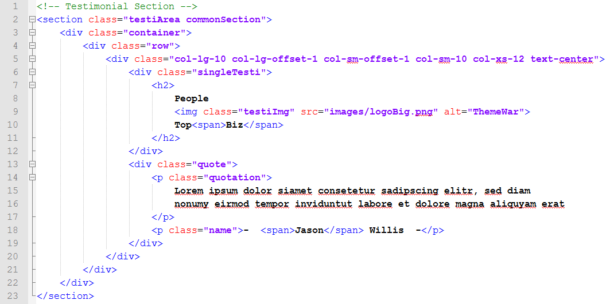
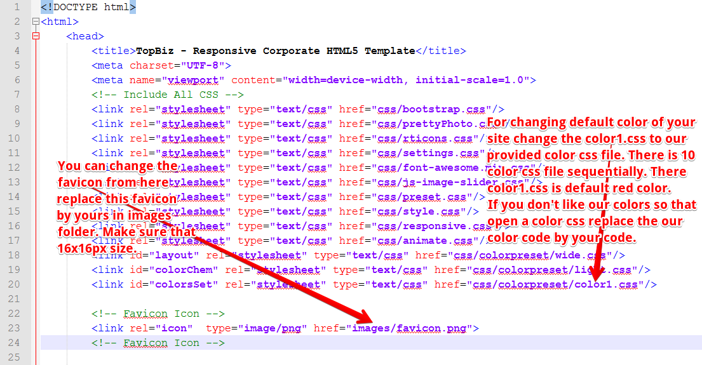

Thank you for purchasing my theme. If you have any questions that are beyond the scope of this help file, please feel free to email via my user page contact form here. Thanks so much!
This template is a responsive layout with different columns. The general coding style is the same throughout the template. Here is the sample of coding style.

If you would like to edit the color, font, or style of any elements in one of these columns, you would do the following:
.quotation {color: #someColor;}
If you find that your new style is not overriding, it is most likely because of a specificity problem. Scroll down in your CSS file and make sure that there isn't a similar style that has more weight.
I.E.
.quote .quotation {color: #someColor;}
So, to ensure that your new styles are applied, make sure that they carry enough "weight" and that there isn't a style lower in the CSS file that is being applied after yours.
I'm using three CSS files in this template. The first one is a generic reset file. Many browser interpret the default behavior of html elements differently. By using a general reset CSS file, we can work round this. This file also contains some general styling, such as anchor tag colors, font-sizes, etc. Keep in mind, that these values might be overridden somewhere else in the file.
The second file contains all of the specific stylings for the page. The file is separated into sections using: And third file is for maintain responsiveness of the theme.
.logo{
padding-left: 100px;
width: 20%;
}
.logoImg{
float: left;
width: 44px;
}
.logo h2{
float: left;
margin-left: 11px;
padding-top: 4px;
}
.logo h2 a{
font-size: 30px;
text-transform: capitalize;
font-weight: 700;
color: #404040;
line-height: 0.8;
}
.logo h2 a:hover{
color: #de3c2f;
font-weight: 300;
}
If you would like to edit a specific section of the site, simply find the appropriate label in the CSS file, and then scroll down until you find the appropriate style that needs to be edited.
div.logo{
change styles here:
}
We have used google fonts:
1. Lato
2. Coustard
You know we provided 10 color scheme. If you want to use them so, open index.html in code editor then change to our other provided color css. Please take look to screeenshot:

I think you got it. There I also show how to change favicon.
This theme imports some Javascript files.
//=======================================================
// Mobile Menu
//=======================================================
$(".menuButton").on('click', function () {
$(".mainMenu > ul").slideToggle('slow');
$(this).toggleClass('active');
});
Go to the js folder open the theme.js the find Google Map in there under the function you will get
change this latitude & longitude. You will get the result. If you don't know how to get latitude & logitude search in google.
Open the .html file in code editor which have Circle Bar in that file find skillArea there you will get div with below data attribute. Change that start and end color to your desired color.
Change this color you will get the result.
I've used the following images, icons or other files as listed.
Once again, thank you so much for purchasing this theme. As I said at the beginning, I'd be glad to help you if you have any questions relating to this theme. No guarantees, but I'll do my best to assist. If you have a more general question relating to the themes on ThemeForest, you might consider visiting the forums and asking your question in the "Item Discussion" section.
ThemeWar